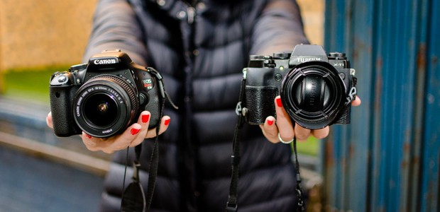

Camera
Type of camera
Nowadays, cameras come in many different forms. These camera types include your favorite compact digital cameras, DSLRs, action cameras, new and improved film cameras, and even the latest mirrorless cameras. It may be hard to choose which type of camera to go for, but it’s easy to figure out which one will work best for you once you find out more about each of them, what they’re best for, and what their pros and cons are.
Whether you’re a beginner, a hobbyist, or a professional, you’ll find a specific type of camera that will fit your lifestyle and photography needs.
